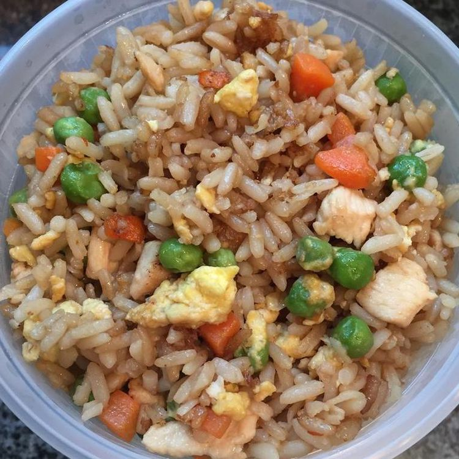

Fried Rice

Description
A quick fried rice recipe like you get at your favorite Chinese restaurant. Leftover rice,
plus a couple of eggs, baby carrots, peas, and soy sauce is all you need.
Garnish with sliced green onions, if desired.
Ingredients
One of the best things about this top-rated dish is how easy it is to customize.
Whatever you have on hand goes — chicken, shrimp, salmon, and kimchi all make mouthwatering additions to fried rice.
Play and create one-of-a-kind fried rice dishes whether you're a vegetarian or meat lover.
- ⅔ cup chopped baby carrots
- ½ cup frozen green peas
- 2 tablespoons vegetable oil
- 1 clove garlic, minced, or to taste (Optional)
- 2 large eggs
- 3 cups leftover cooked white rice
- 1 tablespoon soy sauce, or more to taste
- 2 teaspoons sesame oil, or to taste
Steps
- Place carrots in a small saucepan and cover with water.
Bring to a low boil and cook for 3 to 5 minutes.
Stir in peas, then immediately drain in a colander.
- Heat a wok over high heat. Pour in vegetable oil, then stir in carrots, peas, and garlic; cook for about 30 seconds.
Add eggs; stir quickly to scramble eggs with vegetables.
- Stir in cooked rice. Add soy sauce and toss rice to coat.
Drizzle with sesame oil and toss again.